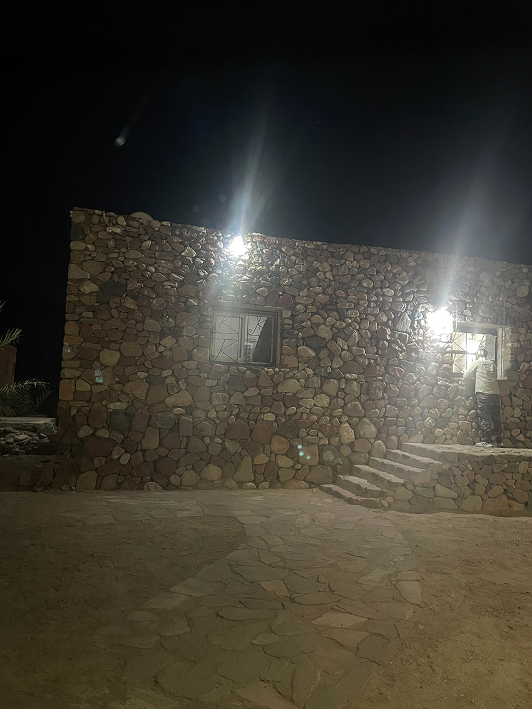
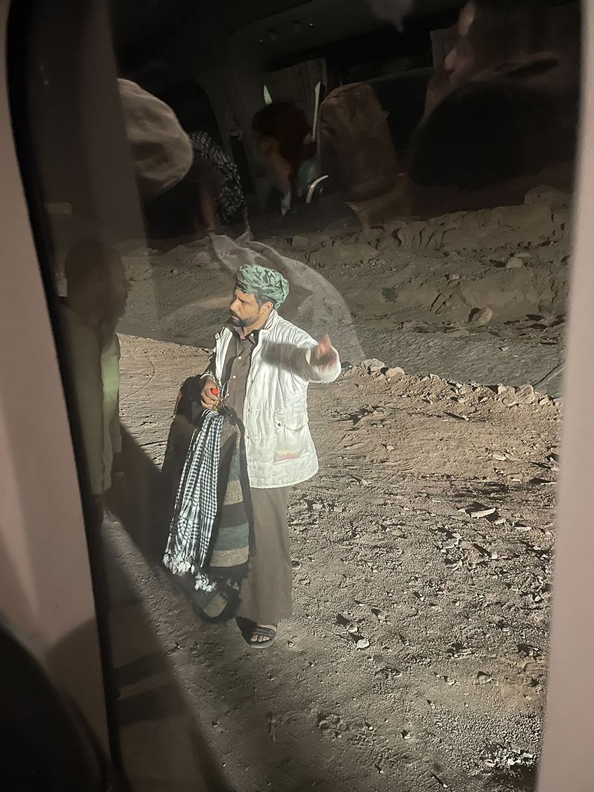
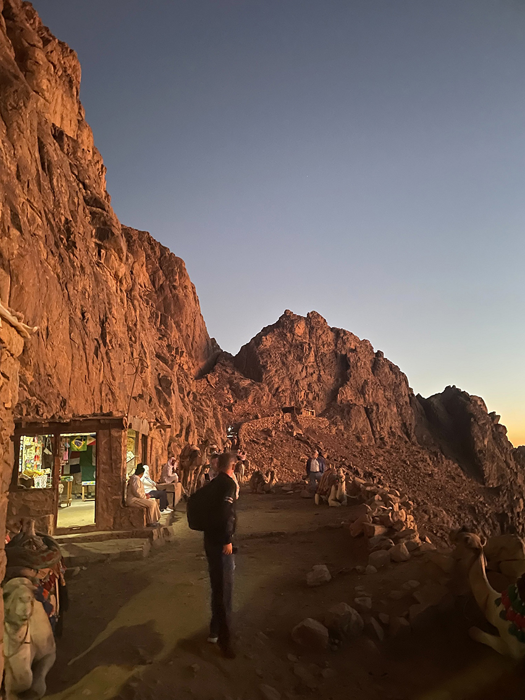
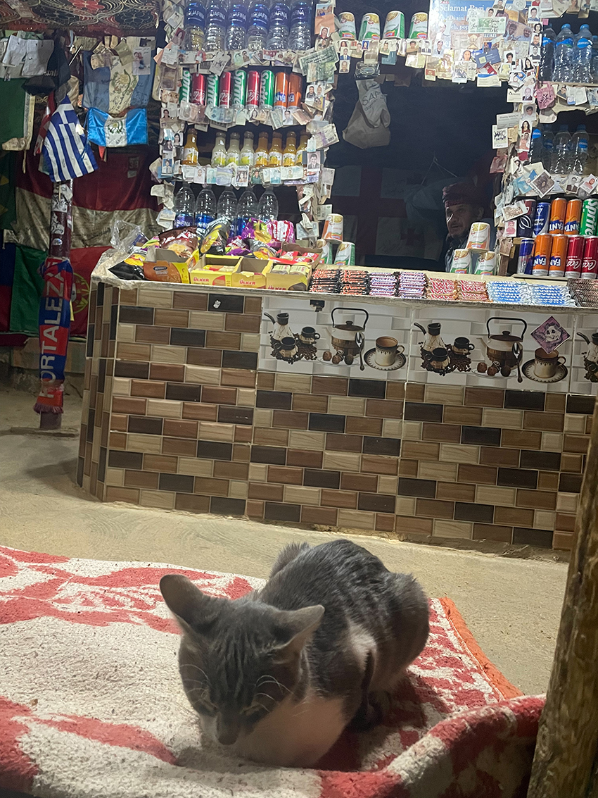
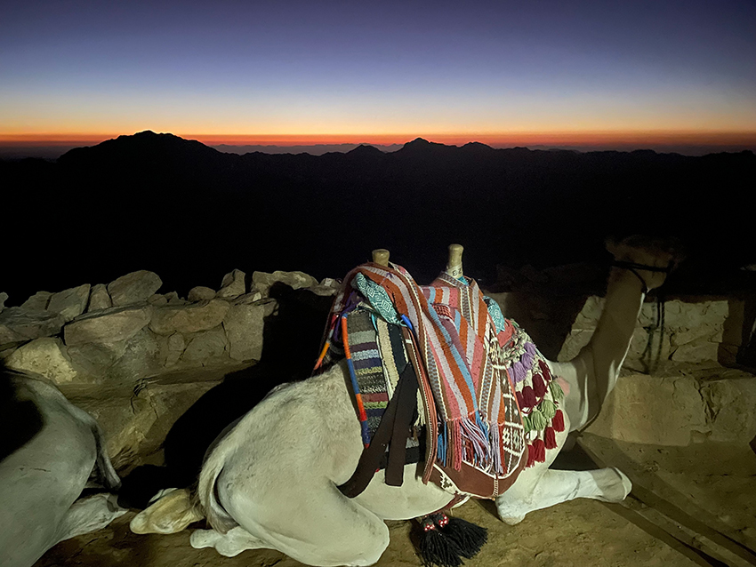
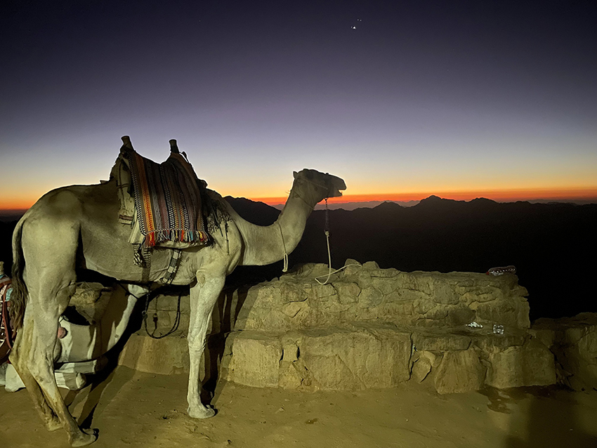
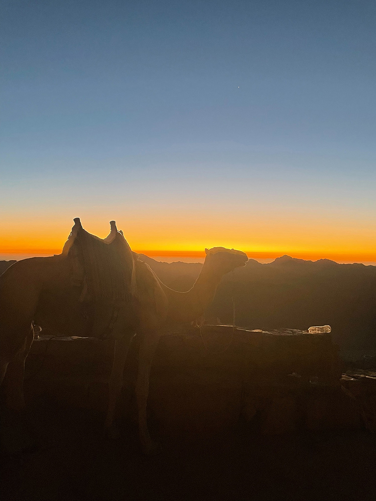
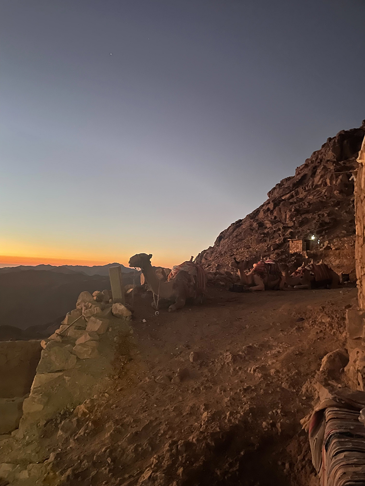

2025 年 9 月的某個夜晚，在達哈布（Dahab）的飯店房間裡整裝的我們，心情既期待又緊張。這一天，我和朋友們決定挑戰一段特別的旅程—夜爬西奈山，迎接傳說中神聖的曙光。這座山不只是觀光景點，更是《聖經》故事裡的聖地。據說數千年前，摩西在這裡領受了十誡，因此被視為啟示與信仰的象徵。想到自己也要踏上同樣的山路，心裡既期待又敬畏。當地導遊告訴我們，從山頂看日出，是一生難忘的體驗。帶著這份憧憬，我們在晚上11點搭上前往西奈山腳的車。
從達哈布到西奈山腳，大約需要兩個小時的車程。窗外一片漆黑，車上氣氛安靜，大家似乎都在暗暗儲存體力。行駛到一半時，車子突然放慢速度。前方出現一處檢查站，幾名安檢人員拿著手電檢查過往車輛。那一刻氣氛嚴肅，幸好只是例行檢查，幾分鐘後就被放行。短暫的緊繃過去後，心裡反而更確信：這不是單純的觀光，而是一場真實的冒險。
|  |
| <圖一 途中的檢查站> |
抵達山腳時，滿天星斗清晰得讓人目不轉睛。還沒下車，就有幾位貝都因人迎上來，手裡拿著毛毯和手電筒，高聲叫賣，聲音響亮得幾乎壓過夜風。只是這夜的氣溫溫和，不像傳說中那樣刺骨，毛毯自然乏人問津，貝都因人一邊熱情兜售，一邊無奈地看著大家搖頭走過，買氣與氣溫呈現了完美的反比。
|  |
| <圖二 兜售的商人> |
按照計畫，我們先騎駱駝抵達到第一個休息站。坐在駱駝背上，隨著牠的步伐前後搖晃，一開始有點不安，但很快就習慣了。夜裡寂靜無聲，只有蹄聲與友人不時傳來的呼喊，確認我們的方位。抬頭望去，星空壯麗得難以言喻。由於沙漠沒有光害，星河彷彿近在咫尺，就像隨手伸出手就能觸碰。那一刻，我甚至錯覺自己與浩瀚的宇宙只隔著一層薄紗。這樣的體驗，在城市裡絕對無法想像。那一刻，我忽然理解，為什麼古人會在這片荒漠中感受到神的臨在。若摩西曾在這裡仰望同樣的天空，或許正是這樣的星辰，讓他生出對真理的敬畏與頓悟。
抵達中繼站後，我們下了駱駝，稍作休憩。這裡聚集了不少遊客，有人跟我們一樣騎駱駝上來，更有不少人是徒步從山下爬上來，果然世上勇者無數，大家都準備繼續用雙腳挑戰剩下的山路。短暫喘息後，我們重新出發。夜爬的道路並不容易，石階崎嶇，坡度也比想像中更陡。隨著高度上升，呼吸變得急促，腳步也越發沉重。
|  |
| <圖三 到了中繼站> |
|  |
| <圖四 休息區的店家內部> |
然而最艱難的，並不是山路本身，而是同行友人的狀態。他一開始就顯得有些吃力，但仍咬牙跟上隊伍。走到一半時，友人體力已接近透支，臉色蒼白，腳步搖晃。我們不敢再勉強，深怕出現意外。於是，經過反覆討論後，我們做出了一個艱難的決定—放棄登頂。心裡難免失落。原本期待能在山頂迎接第一縷曙光，卻只能折返回中繼站，陪著駱駝們靜靜看著天空逐漸泛白。我抬頭望著那片廣闊無垠的星空，內心卻有一種矛盾的平靜。雖然沒有達成目標，但這段旅程依然真實而深刻。
|  |
|  |
|  |
| <圖五/圖六/圖七 駱駝與日出 > |
隨著時間推移，東方的天色慢慢亮起。雲層染上微微的金紅，太陽像是害羞的孩子，緩緩從山巒後方探出。雖然我們的位置無法看見完整的日出，但仍能感受到那份莊嚴與神聖。西奈山作為《聖經》中摩西領受十誡的地方，本就蘊含著厚重的宗教與歷史意義。即使無法登頂，仍能感受到某種無形的力量，讓人心生敬畏。那時的我可能是又餓又累，竟一時不小心把這樣壯麗的景色想成了倒扣的焦糖布丁般的可口。
下山的路同樣艱辛，但因為天色逐漸明亮，能看清周圍的景色：裸露的岩壁、蜿蜒的山徑，與夜晚的神秘相比，白日裡的西奈山顯得更加壯闊而孤絕。這種強烈的反差，更加突顯了它的魅力。
|  |
| <圖八 下山道路一隅> |
回到山腳時，雖然身體已經疲憊不堪，但心裡卻有一種釋然。旅行的意義，並不在於是否完成了原定計畫，而是過程中的體驗與感受。這一夜，我們經歷了山中夜騎駱駝、星空的浩瀚、身體的極限，以及夥伴間的扶持。即使沒有站上山頂，那份共同經歷的回憶，已經足夠珍貴。
這段旅程或許以「失敗」告終，但它卻在我心裡種下了一個未完成的夢想。或許，正因為未完成，才讓它更有力量，提醒我保持勇氣與期待。旅行，總是在意外中留下最深的印記。我默默許下承諾：總有一天，我會再回來。 就像摩西登上山巔領受啟示一樣，每個人或許都需要在某個時刻，親自走上一段艱難的路，去尋找屬於自己的答案。